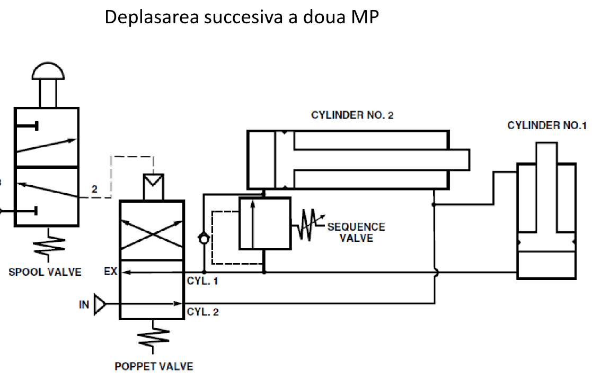
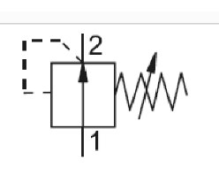
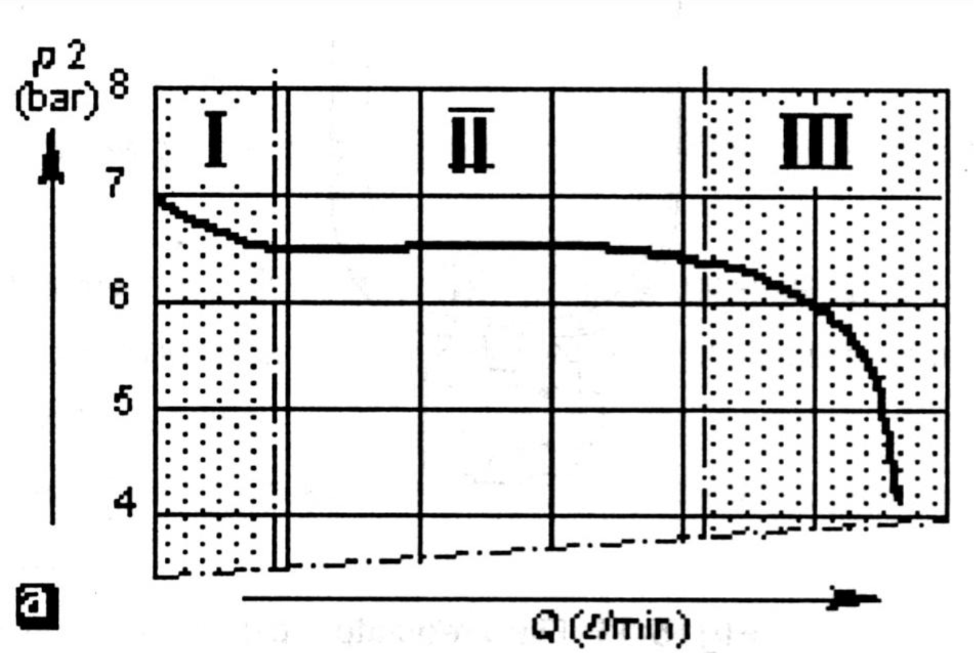
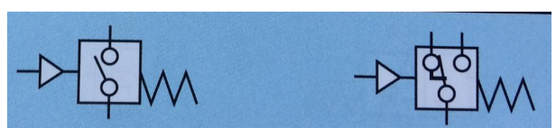
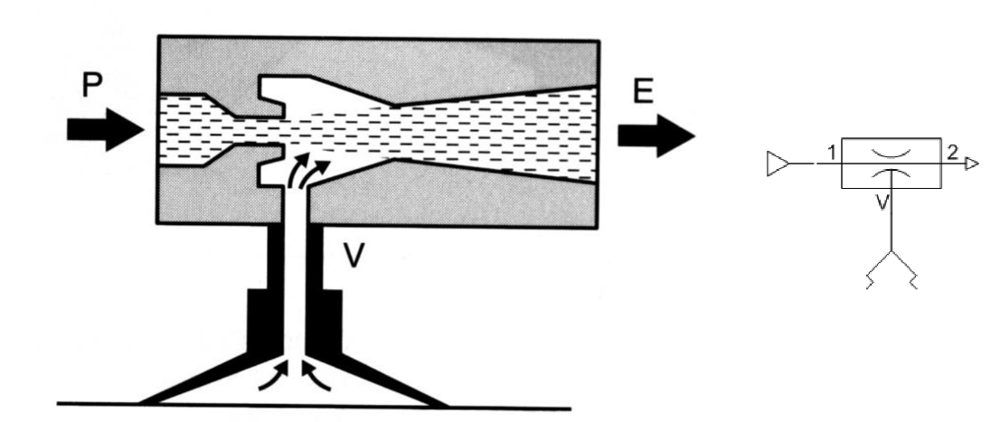

Normal închise, controlează presiunea înaintea ei: rămâne închisă până la un prag
Se găsesc obligatoriu în compresor și rezervor
Pot fi folosite și în sincronizarea acționării

Regulatorul de presiune
Normal deschis, controlează presiunea de la ieșire
Prin acțiunea membranei, limitează sau permite trecerea aerului, setat prin șurub care teansionează arc

Atentie! Regulatoarele de presiunea au un debit nominal pe care lucrează

Pot fi folosiți pentru a regla forța unui motor pneumatic
Pentru debite foarte mari, se folosesc regulatoarele de presiune pilotate ( practic pui regulator la regulator )
Relee de presiune
Se folosesc pentru a detecta prezența presiunii în sistem
Diferențial = comandabil manual, se setează un prag de presiune (prin arc)
Sesizoare de presiune
Detectează persiunea în sistem, vizual, o chestie fosforescentă se ridică și devine vizibilă

Aparatură proporțională
Se referă la acționarea electrică asupra elementelor fizice: de exemplu, electromagneți alimentați la tensiuni și curenți mai mici, rezultând în aparate reglabile electric
Vid
Orice presiune sub un bar
Poate fi generat prin tuburi venturi

Se pot folosi diverse tipuri de ventuze pentru diferite aplicații: cauciuc, silicon (pt matrițe, chestii)
Pentru ventuzele de vacuum, folosim sisteme cu distribuitoare